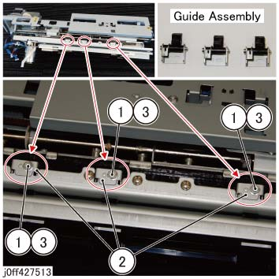
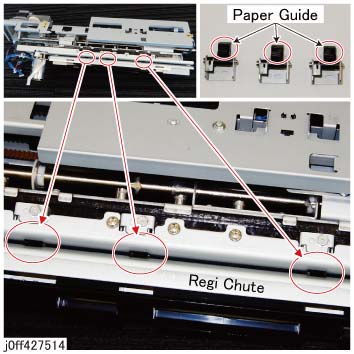

ADJ 27.32.1 打孔 hole 位置 change 步骤 (12mm to 10mm) 
参考 PL:PL 27.32
目的
In consideration 的 customer's wishes, 此 步骤 应 已执行 当...时 changing the 距离 of 打孔 holes 从 the usual 12 mm to 10 mm 从 纸张 边缘 的 送纸 方向.
调整

执行IOT关机步骤. 确认电源已关闭并拔掉电源插头.
拆卸 打孔 组件. (REP 27.1.1)

To prevent 打孔 Encoder 和 打孔 Encoder 传感器 从 getting 损坏的 by direct contact 和/与 a hard 表面 这样的 as the floor, place the removed 打孔 组件 和/与 打孔 电机 侧面 facing up.
请参阅 下图 to swap the 12 mm 类型 导轨 组件 和/与 a 10 mm 类型 导轨 组件. (图 1)
拆卸螺钉（x3） 该 固定 the 12 mm 类型 导轨 组件.
Swap it 使用 10 mm 类型 导轨 组件.
固定 the 螺钉（x3）.

(图 1) ff427513
在...之后 swapping 到 10 mm 类型 导轨 组件, 检查 movement of 导轨 组件 纸张 导轨. (图 2)
插入 纸张 通过 the Regi 滑槽 和 确认 那里 is 编号 loading at 纸张 导轨. If 那里 is loading, 检查 是否 导轨 组件 已安装 properly 和 make 手册 corrections as 所需的.

(图 2) ff427514
Carry 出 步骤 1 按相反顺序 to return 机器 to 其 原始 state.
插头 in 电源插头 和 打开 the breaker 开关 和 电源开关.
执行 the 更换 的 NVM.
链条连接
名称
12 mm (2/4 Holes): 默认 值
10 mm (3 Holes): 设置 值
763-992
打孔 Stopper 调整
0
1
执行 an operational 检查 机器的 和 确认 the 中央 位置 of 打孔 is 10 mm.